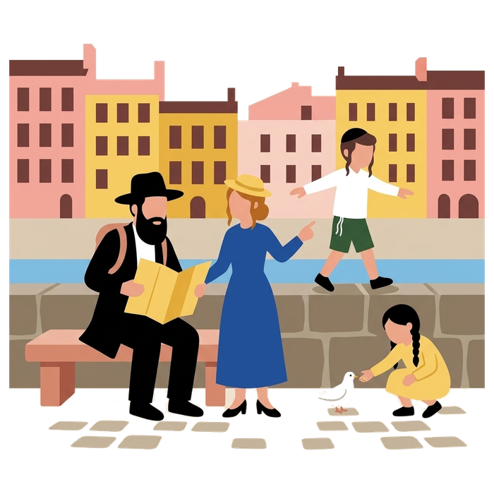
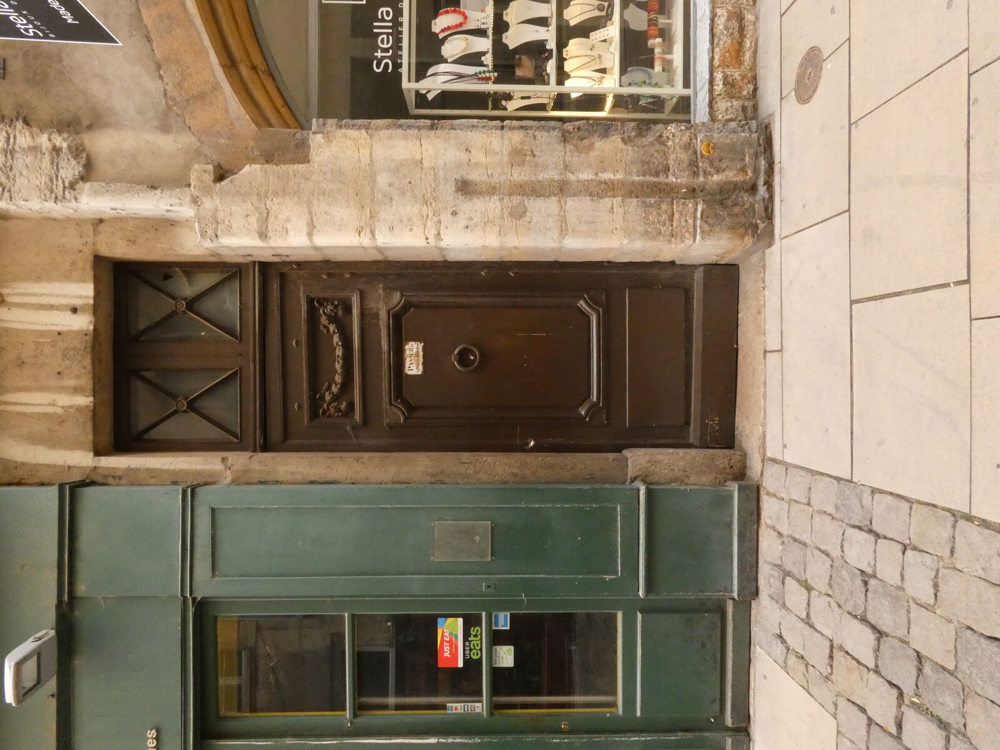
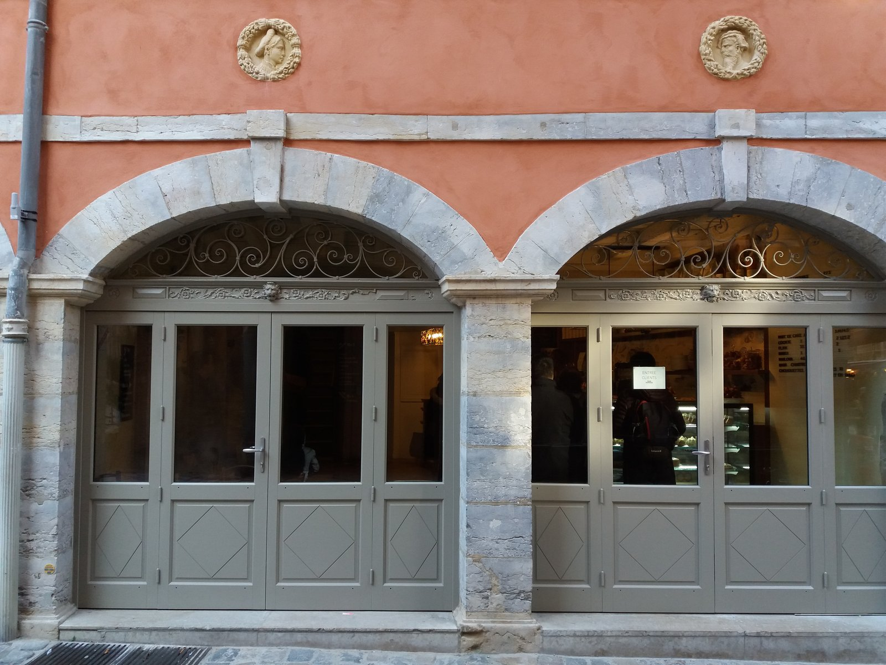
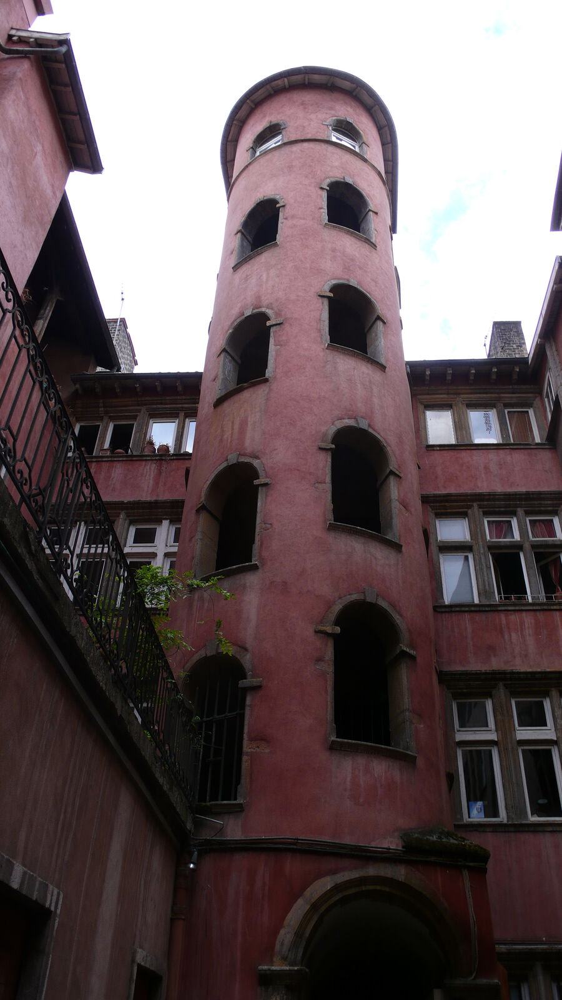
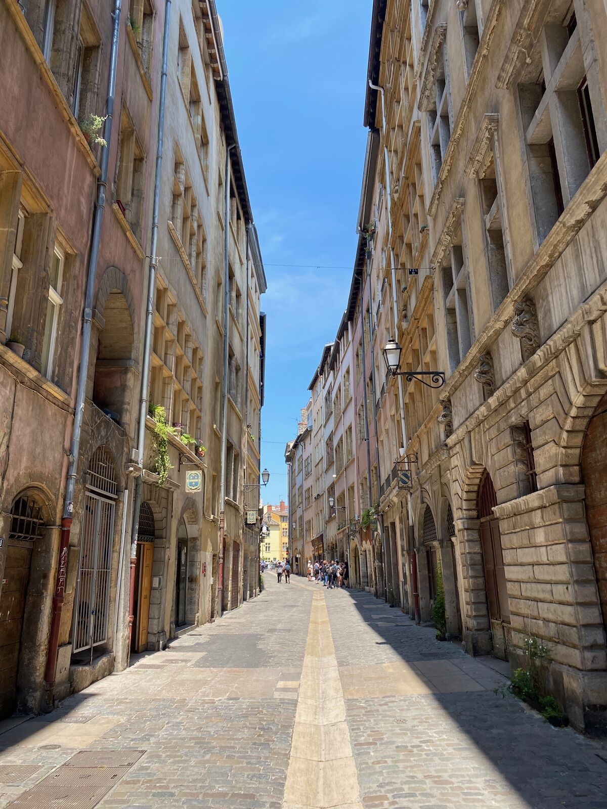

Home / Jewish Lyon guide / Where to stay in Lyon
Where to stay in Lyon
for a Jewish traveller who keeps Shabbat
Lyon has no kosher hotel that we know of. Observant visitors sleep within walking distance of a synagogue, about 10 minutes from the Grande Synagogue when they stay on the Presqu'île, and order Shabbat meals from a Beth Din-certified caterer before Thursday. Three areas work: the Presqu'île near the Grande Synagogue, the 6th arrondissement near the kosher restaurants, and Villeurbanne at the heart of community life.
- 3 areas compared
- Walking estimates to Tilsitt
- No kosher hotel that we know of
- Checked 7 October 2026

The three areas, on foot
All times are walking estimates to the Grande Synagogue, 13 quai Tilsitt, rounded to 5 minutes. Check your own route before you book.
- Presqu'île and Bellecour (Lyon 1st and 2nd). About 10 minutes to Tilsitt. Rose and Roses, a dairy restaurant certified by the Beth Din, is at 21 rue Thomassin, and Neshama Kitchen, a meat restaurant, at 10 rue Mulet. Beth Habad Centre-Ville is also on rue Mulet. The best choice for a first Shabbat in Lyon.
- Lyon 6th, Brotteaux and Foch. About 35 minutes to Tilsitt. Most kosher restaurants on the Lyon side are here: Le Raphaelo, Comptoir 43, The Fifty and Five, Okami, plus a Chabad house on rue Crillon. A good choice if you pray at a local minyan and eat out.
- Villeurbanne, Gratte-Ciel. About 65 minutes to Tilsitt, so you will not walk there on Shabbat. This is the heart of community life: bakeries, groceries, caterers, a Chabad house and many neighbourhood synagogues within a few streets. Pick it if you pray locally and care little about the old town.
Neveh Chalom, 317 rue Duguesclin in the 7th, is about 30 minutes on foot from Tilsitt. No kosher shop or restaurant on the official list is next to it.
The key places on the map
Synagogues, one grocery in the 3rd, three restaurants in the 6th and Lilly Market in Villeurbanne. Tap a marker for directions.




Questions to ask your hotel
We do not say what any hotel does. Put these questions to the hotel before you book, and keep the answers in writing.
- Is there a mechanical key, or can you give us one, instead of an electronic card?
- Can we reach the room by stairs, and is a lower floor available?
- Do any doors or lifts need a badge, and is a staff member available to open them on Shabbat?
- Can you leave the room lights on a fixed setting, and is the key slot free of sensors?
- Can we keep food in the room or in a fridge, and may we use a hot plate we bring ourselves?
- Can you store food we order from a caterer and hand it over on Friday afternoon?
- Can the front desk hold a bag until Saturday night if we need it?
Kosher hotels
Lyon has no kosher hotel that we know of. If you know one, tell us and we add it. Without one, plan your Shabbat meals before you arrive: see kosher catering and Shabbat meals in Lyon.
Pair your stay with your Shabbat
Pick the synagogue first, then the hotel. Prayer times and addresses are on our Shabbat in Lyon page and on the synagogues of Lyon page. Tell us where you sleep and we point you to the nearest minyan and the closest source of meals.
Staying in Lyon: questions
Which area is best for a first visit?
The Presqu'île, around Bellecour. You are about ten minutes on foot from the Grande Synagogue and close to Vieux Lyon, where our tours begin.
Can I walk to the Grande Synagogue from Villeurbanne?
We estimate about 65 minutes, so most visitors pray at a neighbourhood synagogue in Villeurbanne instead. We can point you to one.
Is there a kosher hotel in Lyon?
We know of none. If you find one, tell us.
Can you book a hotel for me?
No. We sell guiding only, and we do not book accommodation. We do help you choose an area and write your questions to the hotel.
Where do I buy food on Thursday?
Hypercacher in the 3rd, Hypercacher Garibaldi in the 6th and Lilly Market in Villeurbanne are certified by the Beth Din de Lyon. All three are on the map above.
Keep reading
Sources: official list of the Beth Din de Lyon (bethdin-lyon.fr), consistoiredelyon.fr, nevehchalom.fr, fr.chabad.org. Map data from OpenStreetMap. Compiled by Mishpacha Tours from these sources. Checked 7 October 2026.